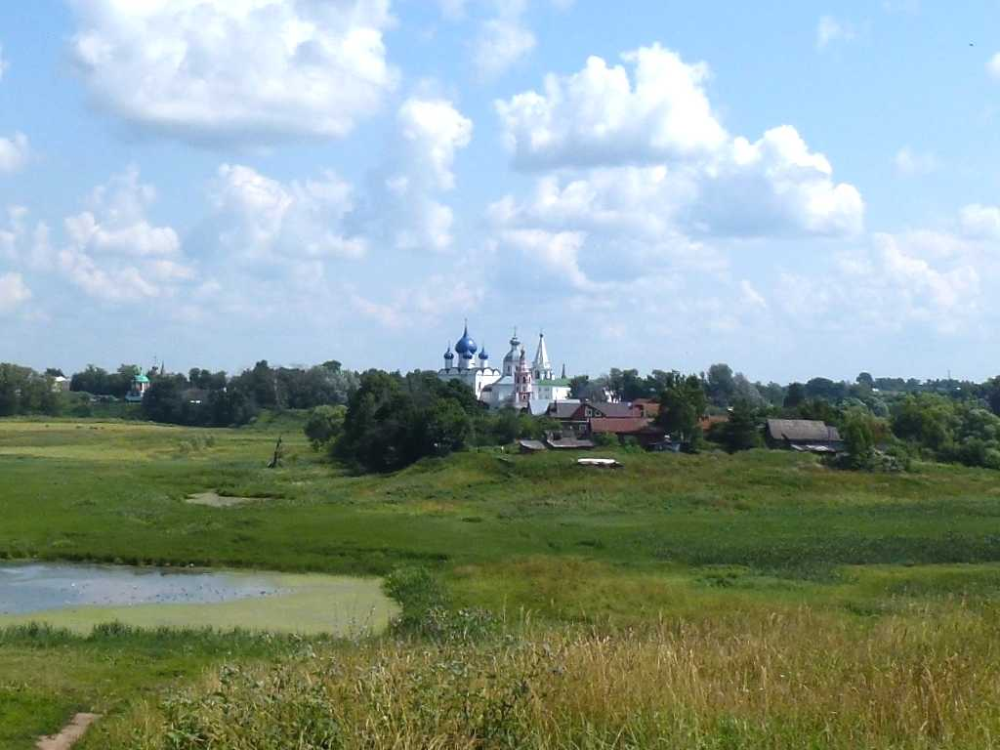
Kremlin Suzdal
８０日間世界一周鉄道の旅で１５日目 １２２５年に創られたスーズダリのクレムリン
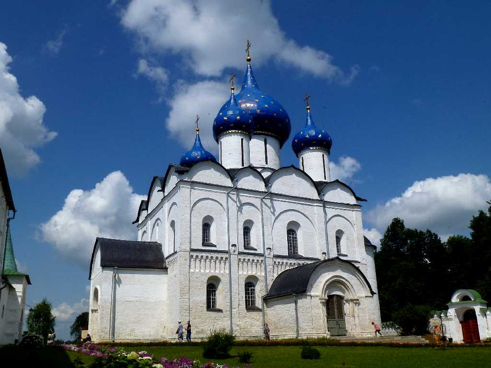
Rozhdestvensky Cathedral Kremlin
生神女誕生大聖堂
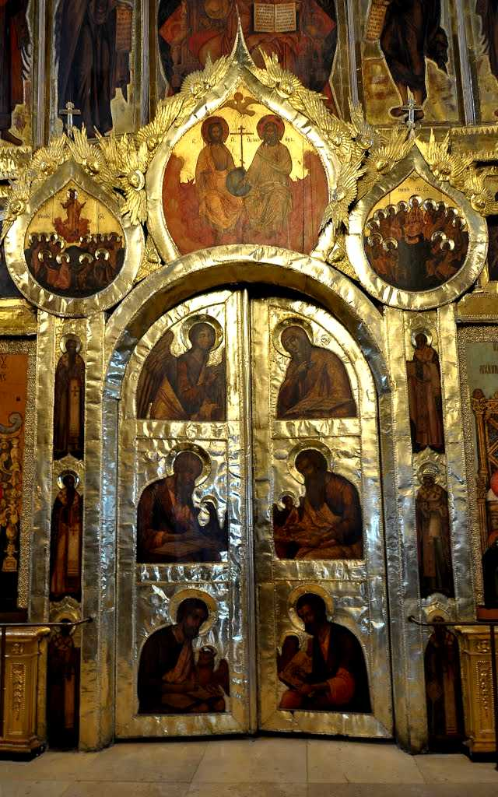
Altar Rozhdestvensky Cathedral
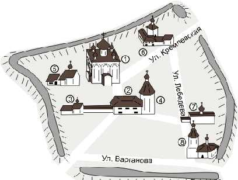
Kremlin
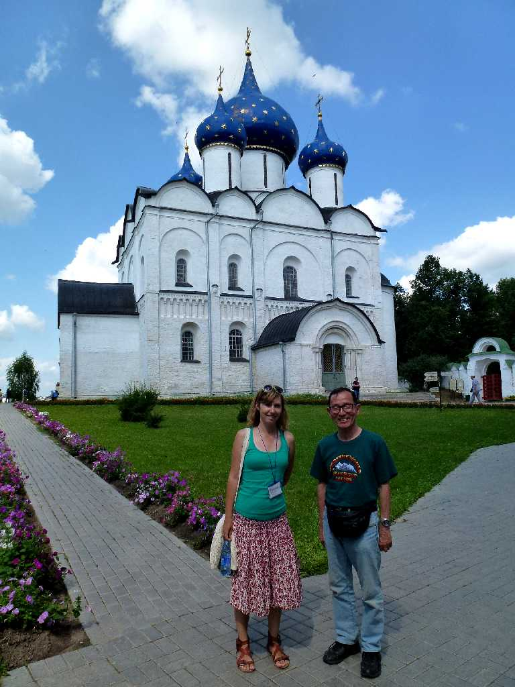
July 8 2013 Rozhdestvensky Cathedral
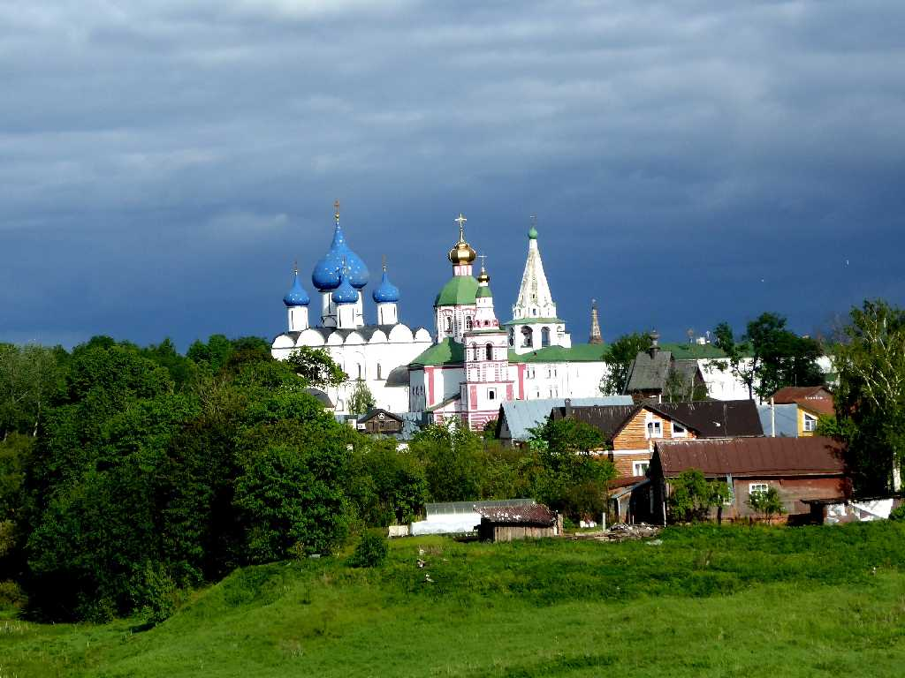
Kremlin Suzdal
８０日間世界一周鉄道の旅で訪問以来４年ぶりの再訪問
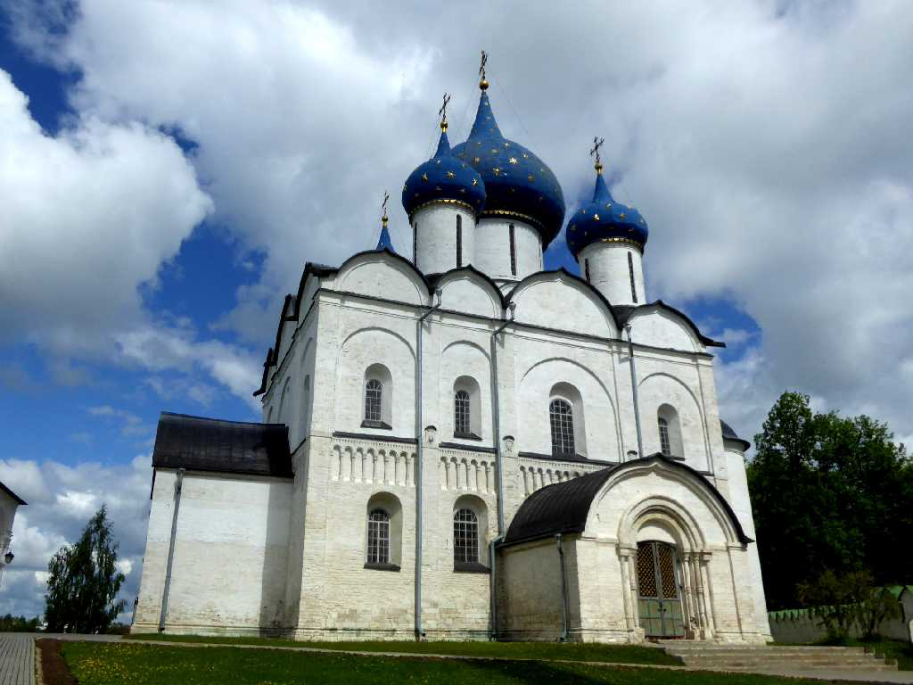
Rozhdestvensky Cathedral Kremlin
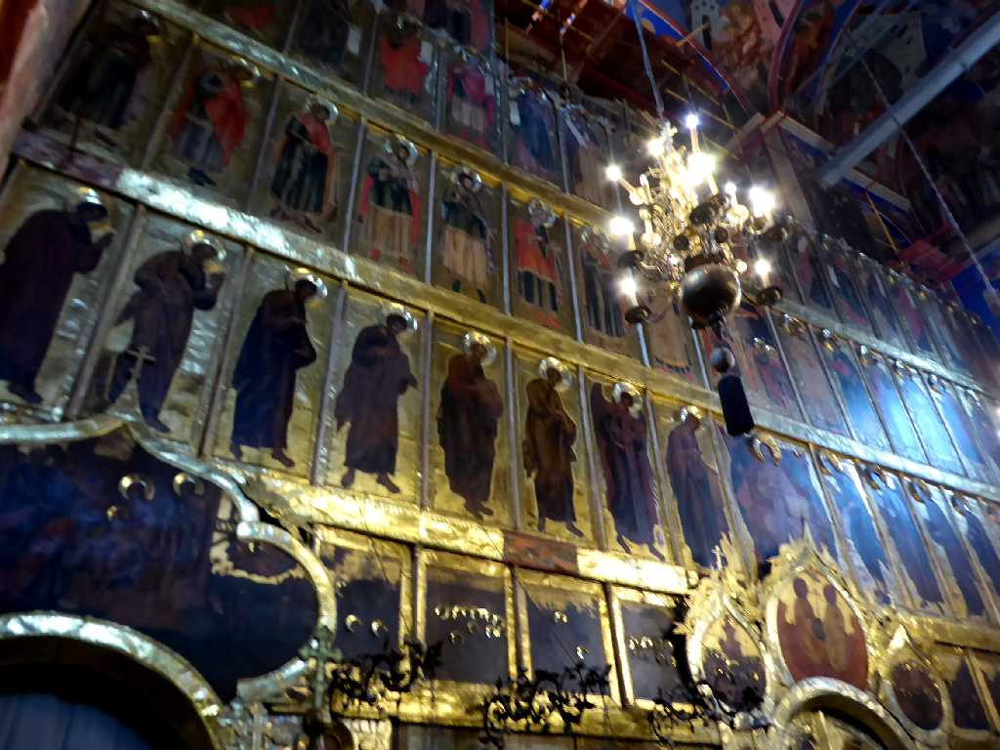
Altar Rozhdestvensky Cathedral
生神女誕生大聖堂の祭壇
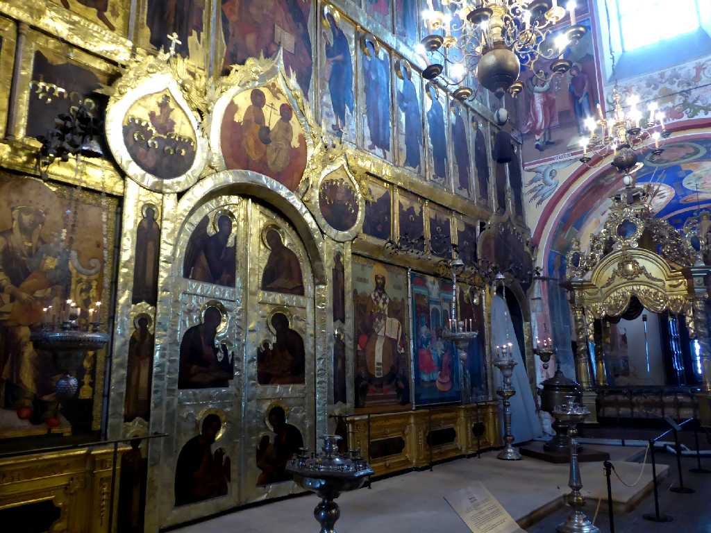
Altar Rozhdestvensky Cathedral
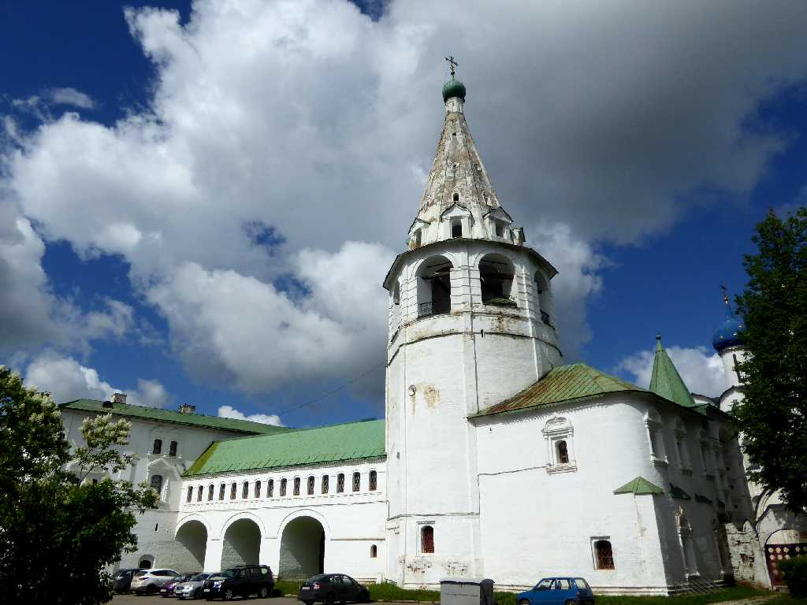
Bell Tower
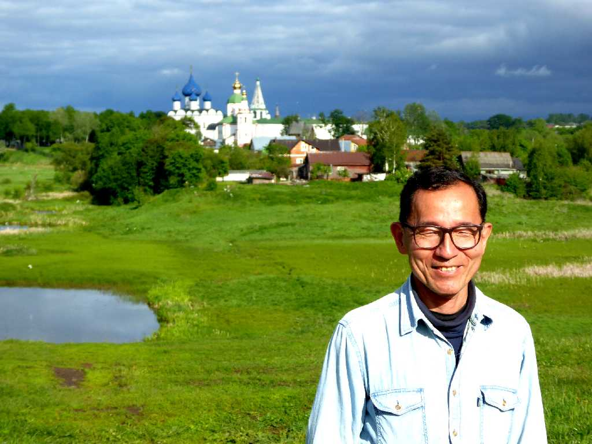
June 6 2017 Kremlin Suzdal